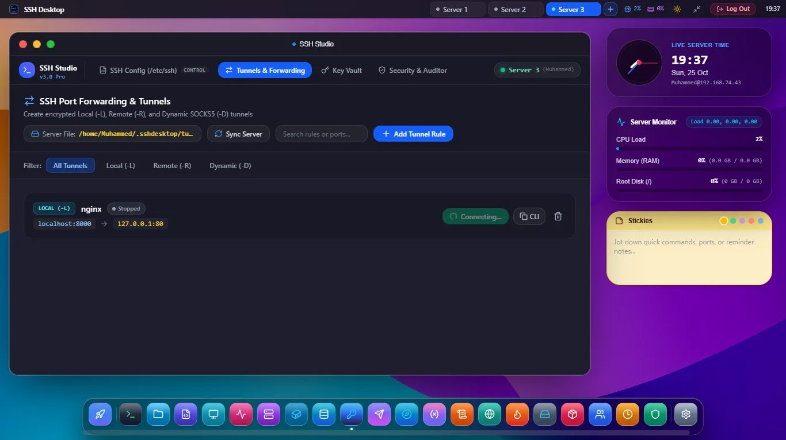

Visual SSH Port Forwarding & Tunnel Manager
Stop struggling with command-line `-L`, `-R`, and `-D` parameters. Configure encrypted tunnels with interactive network diagrams, automatic health monitoring, and one-click reconnects.

Access Private Databases
Forward a local port (e.g. localhost:5432) through your SSH bastion to access private PostgreSQL, Redis, or Elasticsearch clusters securely.
Expose Local Services
Forward remote cloud server ports directly back to your local development machine. Perfect for Stripe webhooks and OAuth callback testing without Ngrok.
Encrypted Browser Proxy
Turn any remote SSH server into an encrypted SOCKS5 proxy server. Route web browser or IDE traffic through secure remote nodes to access private internal portals.
Mastering SSH Port Forwarding: The Complete Visual Architecture
Understand exactly how local, remote, and dynamic SOCKS5 SSH tunnels work under the hood.
Local Port Forwarding
Opens a listening socket on your local client machine (e.g., 127.0.0.1:5432) and encrypts all incoming packets over your SSH connection, instructing the remote SSH server to forward the traffic to a target destination (e.g., a private PostgreSQL RDS instance at 10.0.2.14:5432).
ssh -L 5432:10.0.2.14:5432 user@bastion
Remote Reverse Forwarding
Opens a listening socket on the remote cloud server (e.g., server:8080) and routes incoming requests backward through the encrypted SSH tunnel to a local port on your laptop (e.g., localhost:3000). Ideal for testing webhooks from Stripe, GitHub, or Shopify without paying for Ngrok.
ssh -R 8080:localhost:3000 user@cloud-vps
Dynamic SOCKS5 Proxy
Allocates a local SOCKS5 proxy socket (e.g. localhost:1080). When configured in Firefox, Chrome, or cURL, your application dynamically routes any arbitrary web protocol (HTTP, HTTPS, SMTP) through the remote server, disguising your client IP with complete AES-256 encryption.
ssh -D 1080 -N -C user@remote-proxy
Visual Tunnel Manager vs Fragile Terminal Commands
Command-line SSH tunnels terminate when your terminal tab closes or when your laptop sleeps. SSH Desktop maintains persistent, self-healing tunnels with live socket telemetry.
| Feature | SSH Desktop Visual Tunnels | Standard Terminal CLI (OpenSSH) |
|---|---|---|
| Auto-Reconnect on Wi-Fi Drop | Yes (Self-Healing KeepAlive) | No (Requires AutoSSH scripts) |
| Port Conflict Detection | Yes (Warns & reassigns port) | No (Fails with "Address already in use") |
| Active Socket & Bandwidth Telemetry | Live throughput & socket counts | No (Requires netstat / ss inspection) |
| 1-Click Saved Tunnel Profiles | Yes (Saved per server profile) | Manual ~/.ssh/config aliases |
3 Real-World Enterprise Tunneling Scenarios
Scenario 1: Private AWS RDS Access via Bastion
Your production PostgreSQL database is locked inside an isolated AWS VPC private subnet with no public IP. In SSH Desktop, click "New Local Tunnel", set Source Port to 5432, Destination Host to your RDS endpoint (mydb.c123.rds.amazonaws.com:5432), and select your EC2 Bastion host. You can now connect DBeaver, pgAdmin, or your local backend directly to localhost:5432.
Scenario 2: Testing Stripe & GitHub Webhooks Locally
When testing webhooks, external payment processors need a public HTTPS URL. Create a "Remote Reverse Tunnel" forwarding remote port 8443 to your local dev server at localhost:3000. Point Stripe's webhook URL to your cloud domain: incoming webhooks pass straight into your local IDE debugger with zero third-party relay limits.
Scenario 3: Secure SOCKS5 Proxy at Coffee Shops
Working from public airport or hotel Wi-Fi? Launch a Dynamic SOCKS5 Tunnel on port 1080 to your home or office server. Configure your browser to use SOCKS5 on 127.0.0.1:1080 with DNS proxy enabled. All your web traffic is encrypted through your private SSH pipe, preventing local packet sniffing and DNS poisoning.
SSH Port Forwarding FAQ
Does SSH Desktop require root or administrative privileges to forward ports?
For unprivileged ports (port numbers 1024 through 65535, such as 3000, 5432, 8080), standard user privileges are sufficient. If you wish to bind a local privileged port (such as port 80 or 443), your OS may prompt for administrator permissions.
Can other people on my local network access my forwarded port?
By default, SSH Desktop binds local sockets strictly to the loopback interface (127.0.0.1), ensuring that only applications running on your machine can connect. If you intentionally want local LAN peers to access the tunnel, you can toggle "Bind to All Interfaces (0.0.0.0)" in the tunnel settings.